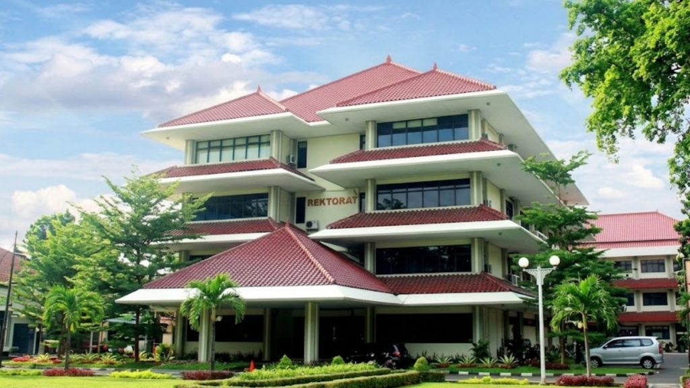

Tentang Kampus Universitas Pancasila

Universitas Pancasila adalah perguruan tinggi
swasta terkemuka di Indonesia yang berdiri pada
28 Oktober 1966 dan saat ini telah terakreditasi Unggul.
Fakultas
- Fakultas Hukum
- Fakultas Ekonomi dan Bisnis
- Fakultas Teknik
- Fakultas Psikologi
- Fakultas Ilmu Komunikasi
- Fakultas Farmasi
Alur Pendaftaran Mahasiswa Baru
- Mengisi formulir pendaftaran secara online melalui website resmi.
- Melakukan pembayaran biaya pendaftaran.
- Mengunggah dokumen persyaratan (Ijazah, Transkrip Nilai/Rapor, Pas foto).
- Mengikuti Ujian Saringan Masuk (USM) atau Seleksi Berdasarkan Prestasi.
- Melakukan daftar ulang jika dinyatakan lulus.